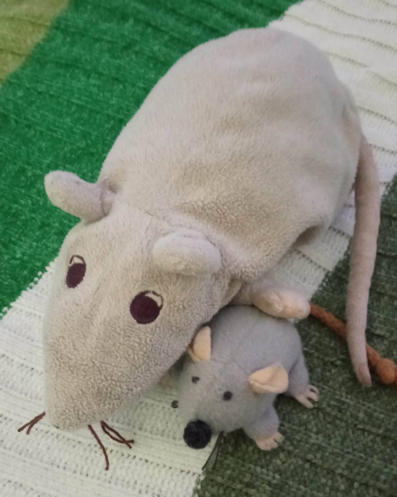

Žurkas dzīve
Esmu dzimis pierīgā, daudzbērnu ģimenē.
Pavadīju savu bērnību pavadiju jautrās rotaļās ar saviem brāļiem un māsām.
Kad man pienāca laiks iet uz skolu, mana ģimene pārvācās uz rīgu.
Šobrīd es mācos RTK.
Brīvajā laikā es ceļoju un papildinu savu blogu.